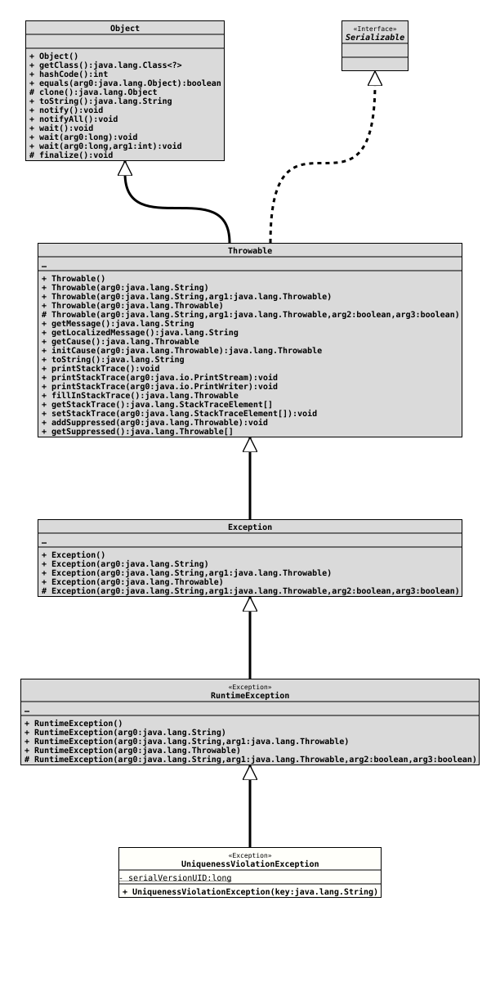

Class UniquenessViolationException
java.lang.Object
java.lang.Throwable
java.lang.Exception
java.lang.RuntimeException
org.tquadrat.foundation.sql.UniquenessViolationException
- All Implemented Interfaces:
Serializable
@ClassVersion(sourceVersion="$Id: UniquenessViolationException.java 1150 2025-09-29 09:14:54Z tquadrat $")
@API(status=STABLE,
since="0.4.1")
public final class UniquenessViolationException
extends RuntimeException
This exception will be thrown in cases where it is expected that a
SELECT statement should return not more than one single record, but
the
ResultSet
holds two or more records.- Author:
- Thomas Thrien (thomas.thrien@tquadrat.org)
- Version:
- $Id: UniquenessViolationException.java 1150 2025-09-29 09:14:54Z tquadrat $
- Since:
- 0.4.1
- See Also:
- UML Diagram
-

UML Diagram for "org.tquadrat.foundation.sql.UniquenessViolationException"
{kind=link}
-
Constructor Summary
ConstructorsConstructorDescriptionCreates a newUniquenessViolationExceptioninstance. -
Method Summary
Methods inherited from class Throwable
addSuppressed, fillInStackTrace, getCause, getLocalizedMessage, getMessage, getStackTrace, getSuppressed, initCause, printStackTrace, printStackTrace, printStackTrace, setStackTrace, toString
-
Constructor Details
-
UniquenessViolationException
Creates a newUniquenessViolationExceptioninstance.- Parameters:
key- The key that was used to access the table.
-